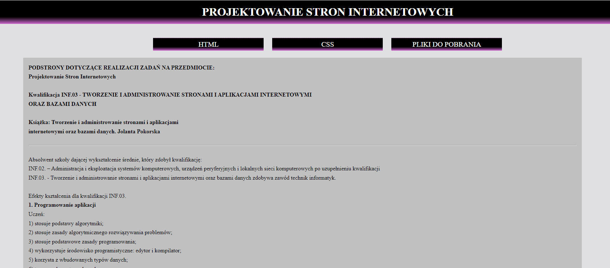

HTML
STRONA GŁÓWNA KOLORY NAUCZYCIELE ZDJĘCIA TABELA TABELA NA OCENE LISTY LISTY NA OCENE MAPY FORMULARZE MULTIMEDIACANVAS
CSS
DOKUMENT
Lista grupy II w 2cWydatki grupy II w 2c
LINKI


Piwo – napój alkoholowy otrzymywany w wyniku fermentacji alkoholowej brzeczki piwnej. Brzeczka stanowi wodny wyciąg ze słodu browarnego z dodatkiem chmielu i ewentualnie innych surowców[1].
W szerokim znaczeniu, zwłaszcza historycznym, piwem określa się napój fermentowany oparty na zbożowym surowcu[2].
Piwo to najstarszy[3] i najczęściej spożywany napój alkoholowy oraz trzeci pod względem popularności po wodzie i herbacie napój na świecie[4].
Produkcja piwa najczęściej przebiega następująco:
1) rozdrobniony słód (zwykle jęczmienny) miesza się z ciepłą wodą, czasem z dodatkiem innych surowców skrobiowych i enzymów,
2) uzyskany ekstrakt (brzeczka) wraz z chmielem poddawany jest gotowaniu,
3) ciecz jest klarowana i schładzana,
4) dodane drożdże piwowarskie powodują fermentację,
5) powstałe piwo zazwyczaj filtruje się i podaje jako napój musujący z uwalniającymi się pęcherzykami dwutlenku węgla tworzącymi pianę[5].
Na charakterystyczne cechy sensoryczne piwa składają się substancje pochodzenia zbożowego, aromat i goryczka chmielowa, alkohol i dwutlenek węgla[6].
Istotnym parametrem piwa jest zawartość ekstraktu przed fermentacją złożonego głównie z cukrów (ulegających przemianom biochemicznym do alkoholu) i dekstryn, a także ze związków azotowych i soli mineralnych[7].
Zwykle zawartość ekstraktu wyrażana jest w stopniach Plato[8]. Najpopularniejsze piwa, jasne lagery[9], zawierają przeciętnie ponad 90% wody i ok. 5% alkoholu objętościowo[10], ale wartości te mogą odbiegać w zależności od stylu piwa[11].
Drożdże piwne w procesie fermentacji pozwalają uzyskać do kilkunastu procent alkoholu obj., ale w wyniku wymrażania wody jego zawartość można zwiększyć nawet do ponad 60%[12].
Z drugiej strony przy użyciu odpowiedniej technologii produkcji można uzyskać piwo bezalkoholowe, zawierające poniżej 0,5% alkoholu obj.[13]  Do piwa w szerokim znaczeniu można zaliczyć podpiwek, jak również kwas chlebowy z Europy Wschodniej (wytwarzany poprzez fermentację chleba),
tak zwane wina ryżowe (np. japońskie sake, chińskie huangjiu, koreańskie cheongju), mętne, fermentujące piwa afrykańskie z prosa, sorga, kukurydzy określane jako opaque beer,
wiele fermentowanych napojów z Ameryki Środkowej i Południowej jak chicha z kukurydzy[14].
Do piwa w szerokim znaczeniu można zaliczyć podpiwek, jak również kwas chlebowy z Europy Wschodniej (wytwarzany poprzez fermentację chleba),
tak zwane wina ryżowe (np. japońskie sake, chińskie huangjiu, koreańskie cheongju), mętne, fermentujące piwa afrykańskie z prosa, sorga, kukurydzy określane jako opaque beer,
wiele fermentowanych napojów z Ameryki Środkowej i Południowej jak chicha z kukurydzy[14].